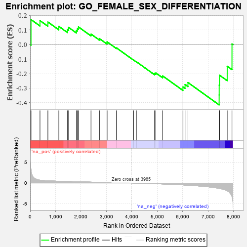
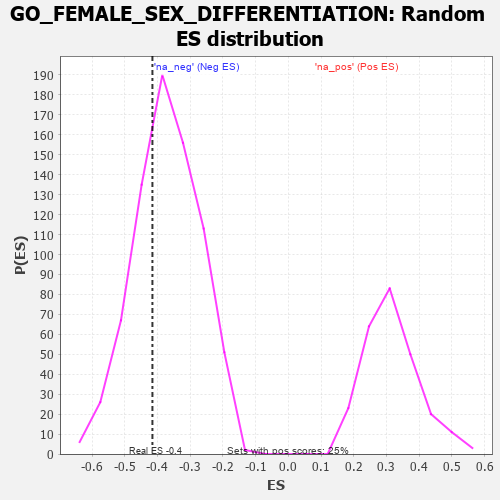

| | | Dataset | 7d |
| Phenotype | NoPhenotypeAvailable |
| Upregulated in class | na_neg |
| GeneSet | GO_FEMALE_SEX_DIFFERENTIATION |
| Enrichment Score (ES) | -0.4154432 |
| Normalized Enrichment Score (NES) | -1.1226221 |
| Nominal p-value | 0.3150134 |
| FDR q-value | 0.7306038 |
| FWER p-Value | 1.0 |
Table: GSEA Results Summary

Fig 1: Enrichment plot: GO_FEMALE_SEX_DIFFERENTIATION
Profile of the Running ES Score & Positions of GeneSet Members on the Rank Ordered List
| PROBE | GENE SYMBOL | GENE_TITLE | RANK IN GENE LIST | RANK METRIC SCORE | RUNNING ES | CORE ENRICHMENT | | 1 | SPO11 | | | 35 | 3.371 | 0.1722 | No |
| 2 | BAX | | | 387 | 0.711 | 0.1653 | No |
| 3 | FST | | | 698 | 0.560 | 0.1556 | No |
| 4 | SRC | | | 1128 | 0.459 | 0.1256 | No |
| 5 | DACH1 | | | 1471 | 0.395 | 0.1033 | No |
| 6 | INHBB | | | 1514 | 0.388 | 0.1184 | No |
| 7 | SGPL1 | | | 1820 | 0.334 | 0.0975 | No |
| 8 | SMAD4 | | | 1860 | 0.326 | 0.1096 | No |
| 9 | TAF4 | | | 1899 | 0.321 | 0.1216 | No |
| 10 | LHX9 | | | 2393 | 0.247 | 0.0725 | No |
| 11 | SLIT2 | | | 2724 | 0.195 | 0.0412 | No |
| 12 | WNT4 | | | 3023 | 0.146 | 0.0113 | No |
| 13 | BRCA2 | | | 3024 | 0.146 | 0.0190 | No |
| 14 | GAS2 | | | 3392 | 0.090 | -0.0225 | No |
| 15 | ROBO2 | | | 4066 | -0.018 | -0.1062 | No |
| 16 | MSH4 | | | 4176 | -0.038 | -0.1180 | No |
| 17 | SLIT3 | | | 4890 | -0.175 | -0.1986 | No |
| 18 | FZD4 | | | 4940 | -0.186 | -0.1950 | No |
| 19 | ATM | | | 5210 | -0.249 | -0.2158 | No |
| 20 | PTPRN | | | 6007 | -0.474 | -0.2911 | No |
| 21 | UBB | | | 6090 | -0.503 | -0.2751 | No |
| 22 | INSR | | | 6204 | -0.538 | -0.2611 | No |
| 23 | LHX1 | | | 7431 | -1.305 | -0.3471 | Yes |
| 24 | MMP19 | | | 7433 | -1.309 | -0.2786 | Yes |
| 25 | CASP2 | | | 7442 | -1.322 | -0.2103 | Yes |
| 26 | CASP3 | | | 7747 | -1.902 | -0.1489 | Yes |
| 27 | ARRB1 | | | 7935 | -3.377 | 0.0045 | Yes |
Table: GSEA details [plain text format]

Fig 2: GO_FEMALE_SEX_DIFFERENTIATION: Random ES distribution
Gene set null distribution of ES for GO_FEMALE_SEX_DIFFERENTIATION